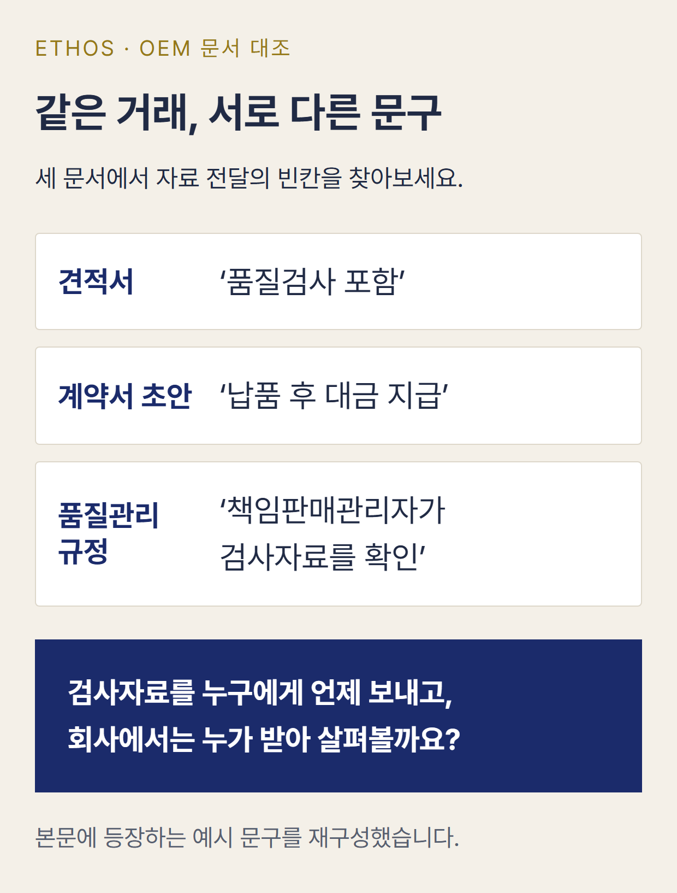

[내 화장품 브랜드를 만들기 전에 알아야 할 인허가 ④] 화장품 OEM 계약, 제조사가 품질검사까지 맡으면 끝일까요?
화장품 OEM 견적서에 ‘제조 및 품질검사 포함’이라고 적혀 있습니다. 가격과 납품일도 확인했습니다. 그런데 계약서를 다시 읽어보니 시험성적서를 언제 보내준다는 말도, 검사에 문제가 생겼을 때 누구와 협의한다는 내용도 없습니다.
안녕하세요, 행정사 지상진입니다.
화장품 브랜드를 처음 준비하면서 OEM 제조업체를 정하면 제품 출시가 한결 가까워진 듯합니다. 보습크림 샘플과 용기, 포장을 확정하고 최소 주문 수량과 생산단가까지 맞췄으니까요.
공장에서는 원료를 구하고 제품을 만들며 품질검사까지 하겠다고 합니다. 그렇다면 브랜드 회사는 완제품을 받아 판매만 하면 되는 걸까요?
그렇지는 않습니다. 국내 OEM 제조업체가 품질검사를 맡더라도 화장품을 자기 책임으로 유통·판매하는 책임판매업자에게는 품질관리와 판매 후 안전관리 의무가 남습니다. 법에서 정한 조건을 충족하면 책임판매업자가 별도로 품질검사를 다시 하지 않을 수 있지만, 제조업체를 관리·감독하고 필요한 기록을 받아 관리하는 일까지 사라지는 것은 아닙니다.
계약서에서 확인할 내용도 그만큼 늘어납니다. 검사 비용뿐 아니라 어떤 제조번호의 결과를 누가 언제 받아 확인할지까지 담아야 합니다.
보습크림 OEM 계약 하나를 따라가며 그 이유를 살펴보겠습니다.
「내 화장품 브랜드를 만들기 전에 알아야 할 인허가」 시리즈
① 화장품 OEM 창업, 공장 없어도 책임판매업 등록해야 할까요?
② 책임판매관리자 자격, 대표자가 직접 맡아도 될까요?
③ 책임판매업 등록서류, 신청서만 내면 될까요?
④ OEM 계약, 제조사가 품질검사까지 맡으면 끝일까요? ← 이번 글
⑤ OEM 생산 완료, 판매 전 원료목록부터 보고해야 할까요?
⑥ 미백·주름개선 OEM, 기능성화장품 심사가 필요할까요?
⑦ 화장품 패키지와 광고, 출시 전 어떤 문구를 확인해야 할까요?
⑧ 책임판매업 등록 후 매년 해야 하는 의무는 무엇일까요?
⑨ 해외 OEM 화장품 수입, 국내 등록만으로 가능할까요?
⑩ 화장품 브랜드를 인수했다면 책임판매업도 변경등록해야 할까요?
「내 화장품 브랜드를 만들기 전에 알아야 할 인허가」 시리즈에서는 브랜드 기획부터 영업등록, 제조계약, 제품 출시 후 의무까지 사업자가 실제 확인해야 할 순서를 살펴봅니다. 이번 ④편에서는 국내 OEM 계약서의 ‘품질검사 포함’이라는 문구가 어디까지를 의미하는지, 브랜드 회사에는 어떤 일이 남는지 알아보겠습니다.
공장이 맡는 품질검사와 브랜드 회사에 남는 일
앞의 견적서를 받은 사람이 ‘미소뷰티’ 보습크림을 준비하는 민수 씨라고 해보겠습니다. 공장을 직접 운영하지 않는 민수 씨는 OEM 제조업체에 원료 조달과 생산, 충전, 포장, 품질검사를 맡기기로 했습니다. 이제 견적서에 적힌 공장의 일과 브랜드 회사가 맡을 일을 나눠볼 차례입니다.
법령에서는 제조업자와 책임판매업자가 맡을 일을 나누어 정합니다. 「화장품법」 제5조제1항에 따라 화장품제조업자는 제조 과정의 기록과 원료·자재·완제품의 시험·검사 등에 관한 의무를 집니다. 「화장품법 시행규칙」 제11조제1항은 제조관리기준서, 제품표준서, 제조관리기록서와 품질관리기록서의 작성·보관 등 제조업자의 준수사항을 정합니다.
반면 민수 씨 회사가 자기 책임으로 완제품을 유통·판매하는 화장품책임판매업자라면 「화장품법」 제5조제2항과 같은 시행규칙 제12조에 따른 의무도 지켜야 합니다. 여기에는 품질관리기준과 책임판매 후 안전관리기준의 준수, 제조번호별 품질검사, 제조·검사 위탁에 관한 관리·감독 및 관련 기록 관리가 포함됩니다.
지난 ③편에서 책임판매업 등록서류로 살펴본 품질관리·안전관리 규정이 여기서 다시 등장합니다. 규정에는 브랜드 회사가 품질자료를 어떻게 확인하고 관리할지 적습니다. 그런데 제조업체와 맺은 계약에 자료를 받는 방법이 빠져 있다면, 규정대로 일을 하기 어렵습니다.
제조업체가 우수화장품 제조 및 품질관리기준(CGMP)을 내세우기도 합니다. 「화장품법 시행규칙」 제11조제2항은 식약처장이 제조업자에게 우수화장품 제조관리기준 준수를 권장할 수 있다고 정합니다. 공장의 역량을 살필 때 참고할 수 있지만, CGMP를 갖춘 공장과 계약해도 브랜드 회사의 의무는 남습니다.
‘공장이 좋은가?’를 살폈다면, 이제 민수 씨 회사가 받을 자료를 볼 차례입니다. 공장이 수행한 검사와 품질관리를 어떤 자료로 확인할 수 있을까요?
그렇다면 같은 제품을 두 번 검사해야 할까요?
브랜드 회사에도 품질검사 의무가 남는다고 하니, 민수 씨는 공장에서 검사를 마친 보습크림을 다시 시험기관에 보내야 하는지 궁금해집니다. 공장에서 한 검사와 책임판매업자의 검사를 무조건 두 번 해야 하는 것은 아닙니다.
「화장품법 시행규칙」 제12조제5호는 책임판매업자가 제조번호별로 품질검사를 철저히 한 뒤 유통하도록 정합니다. 다만 제조업자와 책임판매업자가 같은 경우, 또는 시행규칙 제6조제2항제2호 각 목의 기관 등에 품질검사를 위탁하고 제조번호별 검사결과가 있는 경우에는 별도 검사를 하지 않을 수 있습니다.
제6조제2항제2호에서 정한 기관 등에는 시험실을 갖춘 제조업자와 법령에 따른 화장품 시험·검사기관 등이 포함됩니다. 민수 씨 회사와 OEM 공장은 서로 다른 사업자입니다. 같은 사업자인 경우의 예외는 적용되지 않으므로 위탁검사의 법정 요건과 제조번호별 결과를 따져봐야 합니다.
공장이 법정 요건에 맞는 시험실을 갖췄다면 직접 검사할 수 있습니다. 공장이 외부 기관에 맡긴다면 실제 시험을 수행하는 기관과 자료 전달 경로를 확인해야 합니다. 검사 장소의 이름을 적었다면, 납품받을 생산분의 제조번호와 검사결과도 대조할 수 있어야 합니다.
제조번호를 보면 같은 제품명으로 생산된 물량도 구별해 살펴볼 수 있습니다. 소비자가 보는 제품명은 같아도 서로 다른 생산분을 가리키는 제조번호가 있을 수 있습니다. ‘미소뷰티 보습크림 검사 완료’라는 문장만으로는 어떤 생산분의 검사인지 확인하기 어렵습니다.
제12조제6호는 제조나 일정한 품질검사를 위탁한 책임판매업자에게 수탁자의 관리·감독, 제조·품질관리 기록의 수령·유지·관리, 최종 제품의 품질관리를 요구합니다. 별도 검사를 생략할 수 있어도 이 의무는 남습니다.
검사 담당자를 정했다면, 납품받을 제조번호와 검사결과를 연결해 볼 차례입니다.
📦 ‘검사 완료’라는 메일과 납품 상자의 번호가 맞지 않는다면
납품을 앞두고 공장에서 ‘품질검사 완료, 출고 가능합니다’라는 이메일을 보냈다고 생각해 보겠습니다. 그런데 첨부자료에는 제품명만 적혀 있고 제조번호가 없습니다.
받기로 한 물량에는 제조번호가 서로 다른 제품도 포함되어 있습니다.
자료가 여러 장 있어도 어느 제조번호의 결과인지 모르면 납품받는 제품과 대조할 수 없습니다. 해당 생산분의 기록을 제조업체에 요청해야 합니다.
이때 알아두면 좋은 문서가 제품표준서와 품질관리기록서입니다. 제품표준서는 해당 제품을 어떤 규격과 기준에 따라 만들고 관리하는지 설명하는 자료입니다. 품질관리기록서는 그 생산분의 품질관리 결과를 확인하는 자료입니다. 시행규칙 제11조제1항은 제조업자의 관련 문서 작성·보관 의무를, 제12조는 책임판매업자가 제조업자로부터 제공받은 문서의 관리 의무를 정하고 있습니다.
검사자료를 언제, 누구에게 받을지 정하기
계약서에 ‘시험성적서 제공’이라고 적었다면 한 번 더 구체적으로 정해야 합니다. ‘어떤 제조번호에 관한 어떤 결과를 어떤 시점에 전달할 것인가’가 빠져 있기 때문입니다. 필요한 제품표준서와 품질관리기록서를 누가 받고 어디에 보관하는지도 함께 정해야 실제 품질관리규정을 지킬 수 있습니다.
시험성적서라는 이름의 파일 하나로 법령상 필요한 모든 기록을 확보했는지는 파일의 내용과 위탁 구조에 따라 판단해야 합니다.
계약서 문구를 예로 들면 이렇습니다.
‘제조업체는 납품 대상 제품의 제조번호와 해당 제조번호의 품질검사 결과를 확인할 수 있는 자료를 양측이 정한 방법으로 책임판매업자에게 제공한다.’
법정 표준조항은 아닙니다. 실제 계약에서는 대상 검사와 문서, 납품 전 제공 시점, 확인 담당자를 더 구체화해야 합니다. 자료를 받았다는 사실과 검사결과가 적합하다는 판단도 구분해야 합니다.
판매 후 문의에도 자료를 찾을 수 있도록
자료를 요청하고 확인할 업무는 이처럼 계약 단계에서 나눌 수 있습니다. 이때 납품 이후에 자료가 필요한 경우도 함께 생각해야 합니다.
제품을 판매한 뒤 고객이 보습크림을 사용하고 피부가 불편하다고 문의하는 경우도 생각해 보겠습니다. 고객응대 담당자가 주문번호와 제품명을 알아도 어느 생산분인지 찾으려면 제조번호 등 추가 정보가 필요합니다.
소비자의 불편 호소만으로 제품 결함이 확정되는 것은 아니므로 문의 내용과 제품 정보, 비슷한 문의가 있었는지도 구분해 기록해야 합니다.
이런 정보가 책임판매관리자에게 전달되면 필요한 경우 제조업체에 해당 제조번호의 자료를 요청할 수 있습니다. 납품 이후에도 공장과 자료를 주고받을 수 있는 경로가 필요한 이유입니다. 계약서에는 판매 후 품질·안전 관련 문의가 생겼을 때 협조할 담당자와 자료 전달 방법도 정해둘 수 있습니다.
고객 문의와 법정 보고·안전조치 구분하기
「화장품법 시행규칙」 제12조제10호는 국민보건에 직접 영향을 미칠 수 있는 안전성·유효성에 관한 새로운 정보나 부작용 발생사례 등을 알게 된 경우 식약처장이 정하여 고시하는 방식에 따라 보고하고 필요한 안전대책을 마련하도록 합니다. 시행규칙 제7조와 별표 2의 책임판매 후 안전관리기준도 적용됩니다.
모든 고객 문의가 곧바로 같은 법정 보고사유가 되는 것은 아닙니다. 회수나 판매중단 등 필요한 조치는 정보의 성격과 관련 법령에 따라 판단해야 합니다.
소비자 문의에 응대하는 일, 기술적으로 원인을 조사하는 일, 법정 보고·안전조치와 당사자 사이의 비용 분담은 구분됩니다. 품질기록을 주고받는 방법은 OEM 계약에서 정할 수 있습니다. 하지만 당사자끼리 비용을 어떻게 부담할지 합의하더라도 법정 보고·안전조치 의무의 주체가 바뀌는 것은 아닙니다.
🔄 샘플을 승인한 다음 제품 사양이 달라진다면
검사자료를 받는 방법만으로는 부족합니다. 민수 씨가 승인했던 보습크림의 용기나 포장이 생산 과정에서 달라지는 상황도 생각해 보겠습니다.
그럴 때는 양측이 승인한 사양부터 확인하고, 다시 확인할 사양을 구분할 수 있어야 합니다.
제품명과 내용량, 핵심 원료의 사양, 용기·포장, 승인된 샘플, 필요한 시험 기준은 계약서나 부속 문서에 적을 수 있습니다. 모든 사항을 계약서 본문에 길게 적을 필요는 없습니다. 양측이 어떤 자료를 기준으로 제품을 승인했는지 알 수 있도록 정하면 됩니다.
품질에 영향을 줄 수 있는 변경에 대해서는 제조업체가 미리 통보하고 관련 자료를 전달한 뒤 양측이 변경 내용과 적용 시점을 서면으로 확인하도록 약정할 수 있습니다. 변경에 따라 추가 시험이 필요할지, 원료 관련 자료나 표시사항을 다시 확인해야 할지는 그 변경 내용에 따라 달라집니다. 이 검토를 누구에게 맡길지도 함께 정할 수 있습니다.
변경자료를 회사 안에서 누가 받는지도 정해야 합니다. 대표자가 계약에 서명하더라도 실제 품질자료를 관리하는 책임판매관리자는 다른 사람일 수 있습니다. 계약서에는 대표자가 사양 변경을 승인한다고 적혀 있는데 품질관리규정에는 책임판매관리자가 변경자료를 확인하도록 되어 있다면, 내부에서 누구에게 무엇을 알려야 하는지 맞춰야 합니다.
승인한 제품이 달라졌을 때 계약서의 확인 담당자가 변경자료를 받을 수 있도록, 회사 안에서 자료를 전달하는 방법도 맞춰 두어야 합니다.
🔒 ‘처방은 영업비밀입니다’라는 답을 들었다면
받을 자료의 범위를 협의하다 보면 영업비밀 문제도 만납니다. 공장은 상세 배합비와 생산공정을 영업비밀로 보호하려고 하고, 민수 씨는 품질관리에 필요한 자료를 받아야 합니다.
모든 처방 정보를 요구할 수 있다는 뜻은 아닙니다. 법령에는 제출 의무와 예외가 따로 있습니다.
「화장품법 시행규칙」 제11조제1항제6호는 제조업자가 관련 제조·품질관리 문서 중 품질관리를 위해 필요한 사항을 책임판매업자에게 제출하도록 정합니다. 다만 제조업자와 책임판매업자가 동일한 경우, 또는 제조업자가 제품을 설계·개발·생산하는 방식으로 제조하면서 품질·안전관리에 영향을 미치지 않는 범위에서 양측 계약상 영업비밀에 해당하는 경우에는 제출하지 않을 수 있습니다.
영업비밀 예외가 적용되는 범위 확인하기
이 예외를 적용하려면 제조업체가 실제로 어떤 일을 맡는지부터 확인해야 합니다. 민수 씨가 처방과 제품 개발을 마친 상태에서 공장에 제조만 맡긴 것인지, 제조업체가 설계·개발·생산까지 맡는 방식인지부터 봐야 합니다.
후자라 하더라도 어떤 정보가 품질·안전관리에 영향을 미치는지, 그 정보가 양측 계약에서 영업비밀로 정해져 있는지에 따라 법정 예외를 판단해야 합니다.
계약서에 ‘처방 등 모든 제조자료는 영업비밀이므로 제공하지 않는다’라고만 적혀 있다면, 브랜드 회사가 품질관리에 필요한 자료까지 받을 수 없게 되는지 살펴봐야 합니다.
법에서 인정하는 예외는 그 요건에 해당하는 범위에서 적용됩니다. 제조사가 영업비밀이라고 부르는 모든 자료가 일괄적으로 예외가 되는 것은 아닙니다.
실무에서는 제공받아야 하는 품질자료와 제조업체가 보호하려는 기술정보를 나누고, 제공 범위와 전달 방법, 열람 권한, 기밀유지 의무를 계약에서 정할 수 있습니다. 민수 씨가 먼저 물어볼 것은 법령상 받아 관리해야 하는 문서가 무엇인지입니다. 세부 처방 전체를 반드시 알아야 하는지는 이와 구분해서 살펴볼 문제입니다.
영업비밀의 범위와 받을 품질기록을 나눠 적으면, 나중에 어느 자료를 요청할지 분명해집니다.
출시일을 정했는데 검사결과에 문제가 생겼다면
민수 씨가 온라인몰 출시일을 정한 뒤, 생산품의 검사결과가 계약에서 정한 기준과 다르거나 추가 확인이 필요한 경우를 생각해 보겠습니다.
공장에서는 재시험이 필요하다고 할 수 있고, 브랜드 회사는 예정된 납품일을 생각할 것입니다. 그런데 계약서에 제품 가격과 수량, 납품일만 적혀 있다면 어떨까요? 누구에게 어떤 자료를 요청하고 일정을 어떻게 협의해야 하는지는 비어 있을 수 있습니다.
그렇다고 납품일이 다가왔다는 이유만으로 품질관리 절차를 건너뛸 수 있는 것은 아닙니다. 책임판매업자에게는 제조번호별 품질검사와 최종 제품의 품질관리 의무가 있습니다. 먼저 시험결과가 확정된 것인지, 어떤 기준에서 차이가 발생한 것인지, 확인해야 할 제조번호와 자료가 무엇인지 구분해야 합니다.
검사결과가 기준에 맞지 않는 것으로 확인됐다면 제조업체에 후속 자료와 원인을 요청하고, 책임판매관리자에게 관련 정보를 전달하는 방법을 정해 두어야 합니다. 제품 보관과 재검사, 재작업, 납품 일정 변경을 어떻게 협의할지도 거래 조건으로 정할 수 있습니다. 실제로 어떤 조치를 취해야 하는지는 확인된 시험결과와 법정 품질관리 의무에 따라 판단해야 합니다.
거래상 비용 부담과 법정 의무 나눠 보기
제품을 납품받은 뒤 문제가 확인됐다면 거래상 책임도 따져봐야 합니다. 제조 과정에서 생긴 문제인지, 브랜드 회사가 요청한 사양 변경과 관련이 있는지에 따라 비용 분담이나 재납품 협의가 달라질 수 있습니다. 계약서에는 불일치 사실을 알릴 담당자와 자료 전달 방법, 재검사·재작업, 반품이나 재납품 협의 절차를 미리 정할 수 있습니다.
비용 부담을 협의할 때도 법정 의무의 주체는 따로 봐야 합니다. 계약서에 ‘문제가 생기면 제조업체가 모든 법적 책임을 진다’고 적더라도 화장품법이 책임판매업자에게 부과한 의무 자체가 제조업체로 넘어가는 것은 아닙니다.
당사자 사이의 비용 부담과 배상 약정은 별도로 정할 수 있지만, 행정기관이 누구에게 어떤 의무를 요구할지는 법령에 따라 판단됩니다.
이제 민수 씨는 처음 받은 OEM 견적서를 다시 펼쳐볼 이유가 생겼습니다. ‘품질검사 포함’이라는 문구만으로는 검사 결과가 맞지 않을 때 누가 자료를 확인하고 출고·납품 일정을 어떻게 협의할지 알 수 없기 때문입니다.
📄 다시 첫 견적서를 펼쳐보면 무엇이 달라질까요?
처음에는 ‘원료 조달·충전·포장·품질검사 포함’이면 충분해 보였습니다. 하지만 검사를 맡기는 것과 검사결과를 받아 관리하는 것은 서로 다른 일입니다. 이제 견적서에 없는 내용을 계약서에서 확인할 차례입니다.
민수 씨가 제조업체와 추가로 정할 내용을 계약서에서 하나씩 확인해 보겠습니다.
1. 무엇을 만들어 납품하는가: 승인한 샘플과 제품 사양, 용기·포장·내용량을 어떤 문서로 특정할지 정합니다.
2. 누가 어떤 검사를 하는가: 제조업체의 시험실 또는 외부 기관의 역할과 법정 위탁검사 요건, 제조번호별 검사결과를 확인합니다.
3. 어느 자료를 언제 받는가: 시험결과와 제품표준서, 품질관리기록서 등 필요한 자료의 제공 범위·시점·담당자를 정하고 영업비밀 예외가 적용되는 범위는 구분합니다.
4. 내용이 달라지거나 검사가 맞지 않으면 어떻게 하는가: 사양 변경의 통보·승인, 불일치 확인, 후속 자료, 납품 일정·재작업·재납품을 협의할 방법을 정합니다.
5. 판매 후 문의에는 누가 협조하는가: 제조번호별 기록을 찾는 경로, 제조업체의 자료 협조와 브랜드 회사 내부의 책임판매관리자에게 정보를 전달할 방법을 정합니다.
이 다섯 가지는 법이 정한 일률적인 계약서 양식이 아닙니다. 법정 품질관리 의무를 실제 거래에 맞게 이행하도록 합의할 항목이며, 계약 문구는 위탁 방식에 따라 달라집니다.
제품 처방에 관한 권리와 상표·디자인 사용범위, 주문 취소, 계약 종료 뒤 남는 재고 처리 등도 별도로 정할 거래 조건입니다. 법정 품질관리와 직접 동일한 문제는 아니지만 제품 사업을 운영하려면 계약 과정에서 다뤄야 할 수 있습니다. 어떤 조항을 우선 협의할지는 실제 생산과 판매 구조에 따라 달라집니다.
세 문서를 놓고 자료 전달의 빈칸 찾기
견적서에는 ‘품질검사 포함’, OEM 계약서 초안에는 ‘납품 후 대금 지급’, 회사의 품질관리규정에는 ‘책임판매관리자가 검사자료를 확인’이라고 적혀 있다고 해보겠습니다. 세 문서를 나란히 놓으면 중요한 빈칸이 보입니다. 제조업체가 검사자료를 누구에게 언제 보내는지, 회사에서는 누가 받아 살펴보는지가 적혀 있지 않습니다.

제조업체가 어떤 자료를 언제 줄지는 계약서에 적습니다. 브랜드 회사에서 누가 어떻게 받아 확인할지는 관리규정에 적고, 두 문서의 내용이 맞는지 확인해야 실제 업무가 이어집니다. 회사에 없는 품질관리팀을 적거나 공장에 모든 자료가 있다고만 해두면 현실과 다른 문서가 될 수 있습니다.
처음의 ‘품질검사 포함’이라는 문구가 틀렸다는 뜻은 아닙니다. 다만 그 한 줄만으로 브랜드 회사가 해야 할 품질관리 업무까지 정해지지는 않습니다. 두 회사가 실제로 맡을 일을 계약서에 담는 것이 이번 계약의 남은 과제입니다.
🔍 직접 준비할 수 있는 부분과 맡길 수 있는 문서 작업
사업자가 제조업체와 검사 업무, 자료 전달 시점, 사양 변경 절차를 직접 협의할 수 있습니다. 계약조건은 두 회사가 합의해야 합니다. 다만 OEM 계약서와 품질관리규정의 담당자가 다르거나 자료 제공 범위가 모호하다면 합의 내용을 문서로 정리하는 데 도움이 필요할 수 있습니다.
「행정사법」 제2조와 다른 법률의 제한에 따라 행정사는 위임받은 범위에서 권리·의무에 관한 서류와 관련 행정문서를 작성할 수 있습니다. 화장품 OEM 계약에서도 당사자가 실제로 합의한 업무 분담을 확인하고 계약서 초안과 관리규정의 표현을 대조해 문서에 담는 작업을 맡을 수 있습니다. 구체적인 작성·제출 범위와 비용은 별도 의뢰 내용에 따라 정해야 합니다.
반면 행정사가 화장품의 기술적인 품질 적합성을 실험실에서 판정하거나 시험결과를 보증하는 것은 아닙니다. 손해배상 분쟁이나 소송 대리도 별도의 전문영역입니다. 서류를 작성하더라도 실제 시험 수행 기관과 제조 방식, 자료 제공 범위, 당사자 사이에서 합의된 내용은 확인되어야 합니다.
화장품 OEM 계약서에 서명하기 전이라면 제조업체의 견적서 또는 계약서 초안, 시험성적서 제공 안내나 회사의 품질관리규정 중 현재 보유한 자료를 보내주세요. 에토스 행정사사무소에서는 무료 사전 검토로 검사 담당자와 제조번호별 결과의 전달 방식을 살펴보겠습니다. 계약서와 관리규정의 담당자가 맞는지, 제조업체와 계약 전에 더 합의할 내용은 무엇인지도 함께 확인하겠습니다. 계약서와 관련 문서의 실제 작성은 범위와 비용을 별도로 정하는 유료 서비스입니다.
[기존 네이버 상담 이미지 4장 삽입 영역: 온라인 접수 / 카카오톡 / 이메일 / 텔레그램]
3줄 요약
1. OEM 제조업체가 품질검사를 맡아도 화장품책임판매업자의 관리·감독과 품질기록 관리 의무는 남습니다.
2. 제조번호별 검사결과와 제품표준서·품질관리기록서의 제공 방식, 사양 변경이나 품질 문제 발생 시 협의 절차를 계약서와 관리규정에 맞춰야 합니다.
3. 별도 검사를 생략할 수 있는 법정 조건과 제조업체의 영업비밀 예외는 범위가 정해져 있으므로 실제 위탁 구조를 기준으로 판단해야 합니다.
#화장품OEM계약 #화장품책임판매업 #화장품법시행규칙 #OEM계약서 #제조위탁계약 #OEM품질관리 #검사위탁 #품질관리기준 #시험성적서 #제품표준서 #품질관리기록서 #제조번호별검사 #책임판매관리자 #브랜드창업 #계약서작성 #납품계약 #사양변경 #품질문제대응